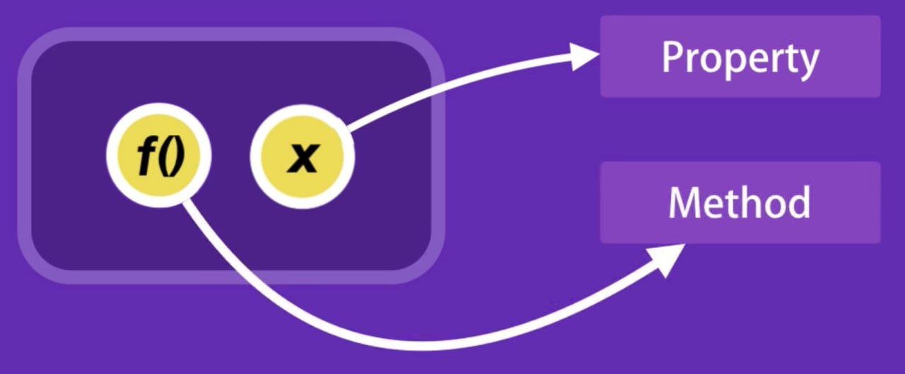

Контекст выполнения функции
Можно с уверенностью сказать что ключевое свойство this одно из самых
запутанных концепций в JS. Новички часто подставляют this методом
научного тыка до тех пор пока скрипт не сработает. Контекст в JS похож
на Контекст в предложении
Второе предложение звечит более локанично. Мы можем сказать что контекст
предложения это Петя, потому что он в центре внимания в это конкретное
время в предложении, даже местоимение кто касается Пети.
И точно так же объект может являться текущем контекстом выполнения
функции
//Петя бежит быстро, потому что Петя пытается поймать поезд
const petya = {
username: "Petya",
showName() {
console.log(petya.username);
}
};
console.log(petya.showName());//"Petya"
Обращение к свойствам объекта внутри метода используется имя самого
объекта аналогично использованию Петя вместо "он".
Внутри функции можно использовать зарезервированое ключевое слово this.
При выполнение функции в this записывается ссылка на объект, в контексте
которого она была вызвана. Таким образом в теле функции мы может
получить доступ к свойствам и методам объекта.
// Петя бежит быстро, потому что он (this) пытается поймать поезд
const petya = {
username: 'Petya',
showName() {
console.log(this.username);
},
};
console.log(petya.showName()); //"Petya"
Рассмотрим пример с коллекцией книг
const bookShelf = {
author: ['Stiven King', 'Boris Akunin'],
getAuthor() {
return this.author;
},
addAuthor(newAuthor) {
this.author.push(newAuthor);
},
};
console.log(bookShelf.getAuthor()); //[ 'Stiven King', 'Boris Akunin'
]
bookShelf.addAuthor('Doncova');
console.log(bookShelf.getAuthor()); //[ 'Stiven King', 'Boris Akunin',
'Doncova' ]
Методы getAuthor() и addAuthor() это функции(методы объекта), вызываемые в контексте объекта bookShelf. Во время их выполнения в this записываемой ссылке на объект bookShelf и мы можем обратиться к его свойствам и методам
Правила определения this
Необходимо усвоить только одно правило определения для this - значение
контекста внутри функции (не стрелочной), определяется не на момент ее
создания, а на момент вызова. Т.е значение this определяется тем, как
вызывается функция, а не где она была объявлена
this в глобальной области видимости
В глобальной области видимости, если скрипт выполнется не в "use stict",
this ссылается на объект window. В "use strict" значение this, в
глобальной области видимости, будет undefind
function foo(){
console.log(this)
};
foo();// undefind. Окно c use strict
this в методе объекта
Если функция была вызвана как метод объекта, контекст будет ссылаться на
объект, частью которого является метод
const petya = {
username: 'Petya',
showThis() {
console.log(this);
},
showName() {
console.log(this.username);
},
};
petya.showThis();//username: 'Petya', showThis: [F: showThis], showName:
[F: showName]
petya.showName();//Petya
Рассмотрим более сложный пример для лучшего понимания.
Сначала
создим функция в глобальной области видимости и вызовем ее
После чего присвоим ее свойство объекта и вызовем ее как метод этого
объекта
function showThis() {
// Это showThis
console.log(this);
}
// Вызываем в глобальном контексте showThis
const user = {
username: 'Mango',
};
// Записываем ссылку на функцию в свойстве объекта
// Обратите внимание что это не вызов - нет ()
user.showContext = showThis;
// Вызываем функцию в контексте объекта
// Это будет указывать на текущий объект в контексте которого
осуществляется вызов, а не глобальный объект
console.log(user.showContext());
//{ username: 'Mango', showContext: [Function: showThis] }
//undefined
this в callback функциях
Передавая методы объекта в качестве callback функции контекста не
сохраняется. Callback это ссылка, не метод, который присваивается как
зрначения вызываемого параметра без объекта.
const customer = {
firstname: 'Petya',
lastname: 'Vasechkin',
getFullName() {
return `${this.firstname} ${this.lastname}`;
},
};
function makeMessage(callback) {
// Вызов метода getFullName без объекта
console.log(`Обрабатываем заявку от ${callback}`);
}
makeMessage(customer.getFullName); // Ошибка при вызове
makeMessage(customer.getFullName()); //Обрабатываем заявку от Petya
Vasechkin
this в стрелочных функциях
Стрелочные функции не имеют своего this. В отличии от обычных функций
изменить значение this внутри стрелки после ее объявления невозможно
Контекст внутри стрелки определяется местом ее объявления, а не вызовом,
и ссылается на контекст родительской функции
Стрелочные функции так же игнорируют наличие "use strict". Если стрелка
заполнила глобальный контест, то this в ней будет содержать ссылку
window, независимо от того выполняется ли скрипт в строгом режиме.
const showThis = () => {
console.log(`Это showThis: ${this}`);
};
showThis(); // Объект window
const user = {
username: 'Mango',
};
user.showContext = showThis;
user.showContext(); //Объект window
Ограничиваем стрелочные функции постоянным контекстом JS движки могут их
оптимизировать, в отличии от обычных функций значение this, которое
может быть изменено
Пример непрактичный, но прекрасно показывает как работает контекст для
стрелок. Значение контекста берется из родительской области видимости
const hotel = {
username: 'Peris Hilton',
showThis() {
const foo = () => {
// Стрелки запоминают контекст во время объявления из родительской
области видимости
console.log('This in foo', this);
};
foo();
console.log('This в showThis', this);
},
};
hotel.showThis();
//This in foo { username: 'Peris Hilton', showThis: [Function: showThis]
}
//This в showThis { username: 'Peris Hilton', showThis: [Function:
showThis] }
Метод функции
Случается ситуации когда функцию необходимо вызвать в контексте объекта,
при этом функция не является его способом. Для этого у функции есть
методы и call, apply и bind.
Метод call()
foo.call(object, arg1, arg2, ...);
Метод call() вызывает функцию таким образом что у this будет ссылка на объект object, а так же передаст аргументы arg1 и arg2 и т.д.
function greetGuest(greeting) {
console.log(`${greeting}, ${this.username}`);
}
const mango = {
username: 'Mango',
};
const poly = {
username: 'Poly',
};
greetGuest.call(mango, 'Добро пожаловать ');//Добро пожаловать ,
Mango
greetGuest.call(poly, 'Добро пожаловать ');//Добро пожаловать , Poly
Метод apply()
Это аналог метода call(), за исключением того что синтаксис передачи
аргументов требует не перечисление, а массив, даже если аргумент всего
один.
foo.call(obj, arg1, arg2, ...)
foo.apply(obj, [arg1, arg2, ...])
Метод apply() вызывает функцию foo таким образом что this будет ссылка на объект obj, а так же передасть элементы массива как отдельные аргументы arg1 и arg2.
function greetGuest(greeting) {
console.log(`${greeting}, ${this.username}`);
}
const mango = {
username: 'Mango',
};
const poly = {
username: 'Poly',
};
greetGuest.apply(mango, ['Добро пожаловать ']); // Добро пожаловать ,
Mango
greetGuest.apply(poly, ['Добро пожаловать ']); // Добро пожаловать ,
Poly
Метод bind()
Методы call() и apply() вызывают функцию на месте, т.е сразу, но в
случае callback функции, когда нужно не сходу вызвать функцию, а
передать ссылку на нее, при этом с привязанным контекстом, применяется
способ bind()
foo.bind(obj, arg1, arg2, ...)
Метод bind() создает и возвращает копию функции foo() с привязанным контекстом obj и аргументами arg1 и arg2. Образуется копия функции, которую можно передать куда угодно и вызвать когда угодно
function greet(clientName) {
return console.log(`${clientName}, добро пожаловать в
${this.service}`);
}
const steam = {
service: 'Steam',
};
const staemGreater = greet.bind(steam);
staemGreater('Mango'); // Mango, добро пожаловать в Steam
const gmail = {
service: 'Gmail',
};
const gmailGreater = greet.bind(gmail);
gmailGreater('Poly');// Poly, добро пожаловать в Gmail
bind() и метод объекта
В случае передачи метода объекта в качестве callback фенкции контекст не
сохраняется. Callback это ссылка, а не метод, который присваивается как
значение вызываемого параметра без объекта
const customer = {
firstName: 'Petya',
lastName: 'Polin',
getFullName() {
return `${this.firstName} ${this.lastName}`;
},
};
function makeMessage(callback) {
console.log(`Обрабатываем заявку от ${callback()}.`);
}
makeMessage(customer.getFullName.bind(customer)); //Обрабатываем заявку
от Petya Polin.
// В строгом режиме значение this в методе getFullName вызывая в
качестве callback функции callback() будет undefind. Обращая к свойствам
firstName и lastName будет ошибка, т.к undefind это не объект
// Метод bind() используется для привязывания контекста передавая методы
объекта в качестве callback функции
Процедурное программирование
Набор несвязаных явно функций и переменных для хранения и обработки
информации. Этот подход простой и прямолинейный и может использоваться
для задач в которых нет тесно связаных сущностей (данных и функций для
их обработки)
Расммотрим пример процедурного кода, в котором есть переменная и функция для передачи результата
const baseSalary = 30000;
const overTime = 10;
const rate = 20;
const getWage = (baseSalary, overTime, rate) => baseSalary + overTime *
rate;
console.log(getWage(baseSalary, overTime, rate));//30200
Объектно ориентированое программирование (ООП) - методология, описывающая программу как совокупность объекта, каждый из которых содержит данные (свойства) и методы для взаимодействия с ним
Используем ООП собрав данные в объекте employee
const employee = {
baseSalary: 30000,
overtime: 10,
rate: 20,
getWage() {
return this.baseSalary + this.overtime * this.rate;
},
};
console.log(employee.getWage()); //30200
При таком подходе в методе отсутствуют параметры. Используется свойство
объекта, которые задаются на момент создания объекта и могут так же
изменяться другими методами. На выходе получаем сущность простым
интерфейсом что уменьшает сложность программы
С идеологической точки зрения ООП это подход к программированию как к
моделированию решающий основную задачу структуирования информации с
точки зрения управляемости, что сущесвенно улучшает контроль процесса
моделирования
Сущности ООП
Представьте что мы проэктируем автомобиль. У него будет двигатель, 4
колеса, бензобак и т.д. Автомобиль должен иметь возможность заводится,
увеличивать и сбавлять скорость. Мы знаем как взаимодействует двигатель
и колеса, т.е по каким законам взаимодействуют разные части машины
Класс
Мы описываем все запчасти из которых состоит автомобиль, тогда как эти
запчасти взаимодействуют между собой и что должен сделать водитель чтобы
автомобиль затормозил, включились фары и т.д. Результатом работы будет
определенный эскиз (шаблон, схема). Мы только что разобрали то, что в
ООП называется классом
Класс - способ описания сущности, определяющий состояние и поведение,
зависищая от этого состояния а так же правила взаимодействия с этой
сущностью (контракт)
В нашем случае класс определяет сущность - автомобиль. Свойствами класса
будут двигатель, колеса, фары и т.д Методами класса будут действия -
открыть дверь, запустить двигатель, увеличить скорость и т.д
Экземпляр
Мы спроэктировали чертеж и автомобили разработанные на их основе сходят
в конвеер. Каждый из них точно повторяет чертеж, все системы
взамодействуют именно так как мы спроэктировали, но каждый автомобиль
уникален. Они все имеют номер кузова и двигателя, но все номера разные,
авто различаются по цвету. Эти автомобили - это экземпляр класса
Экземпляр (объект) - это отдельный представитель класса имеющий
конкретное состояние и поведение, полностью определяемое классом. Это то
что создано по чертежу, т.е на основании описания из класса. Проще
говоря объект имеет конкретное значение параметров и способы работающие
с этими качествами на базе правил, заданых в классе. В этом примере есть
класс - это некий абстрактный автомобиль на чертеже, то объект - это
конкретный автомобиль.
Интерфейс
Когда мы подходим к авто и садимся за руль существует определенный набор
элементов управления с которыми мы можем взаимодействовать.
Интерфейс - это набор свойств и методов класса, доступных для
использования в работе с экземпляром
В сущности интерфейс описывает класс, четко определяя все возможные
действия над ним. Хороший пример интерфейса - приборная панель авто,
которая позволяет вызвать методы такие как увеличить скорость,
тормажение и т.д
Описывая интерфейс класса очень важно выдержать баланс между гибкостью и
простотой. Класс с простым интерфейсом будет легко использовать, но
будут существовать задачи, которые с помощью него будет сложно решать.
Если интерфейс будет гибким вероятней всего он будет содержать довольно
сложные методы с большим кол-вом параметров, которые будут позволять
делать очень много, но его использование будут связаны с большим трудом
и риском ошибиться, перепутав что-то.